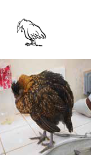

ជំងឺ និងការគ្រប់គ្រងសុខភាព
- ការជ្រើសរើសមាន់ដែលមានសុខភាពល្អ និងមានរូបរាងល្អនៅតាមភូមិ ឬទីផ្សារគឺមានសារៈសំខាន់ ប្រសិនបើអ្នកចង់ធានាបាននូវហ្វូងសត្វដែលមានសុខភាពល្អ និងផលិតភាពខ្ពស់។ ដូច្នេះ អ្នកគួរតែដឹងពីរបៀបវិនិច្ឆ័យគុណភាពនៃពូជផ្សេងៗគ្នាក្នុងអាយុ និងភេទខុសៗគ្នា ដោយផ្អែកលើរូបរាង សំលេង និងអាកប្បកិរិយារបស់វា។
- ខាងក្រោមនេះ យើងនឹងណែនាំពីការណែនាំសាមញ្ញអំពីរបៀបជ្រើសរើសបក្សីដែលមានសំឡេងនៅអាយុផ្សេងៗគ្នា និងណែនាំពីអ្វីដែលត្រូវពិចារណាទាក់ទងនឹងការជ្រើសរើសពូជ។
ការទទួលស្គាល់សត្វបក្សីឈឺ និងការពារជំងឺ
- បក្សីដែលគ្រប់គ្រងបានល្អ ចិញ្ចឹមបានល្អ និងចាក់វ៉ាក់សាំងការពារជំងឺទូទៅ ជាធម្មតានៅតែមានសុខភាពល្អ និងបង្កើតផលបានល្អ។
- ឱសថមិនជំនួសការគ្រប់គ្រងល្អទេ ហើយមិនមែនជាការធានាថាការផ្ទុះជំងឺនឹងមិនកើតឡើងនោះទេ។
- នៅពេលគ្រប់គ្រងថ្នាំ អ្នកគួរតែធ្វើតាមការណែនាំរបស់អ្នកផលិត ឬបុគ្គលិកពេទ្យសត្វដែលនៅជិតអ្នក។ នៅក្នុងការផ្ទុះឡើងនៃជម្ងឺ តែងតែស្វែងរកជំនួយពីបុគ្គលិកពេទ្យសត្វ ដោយសារតែជំងឺបក្សីភាគច្រើនមានសញ្ញាទូទៅ ហើយអាចត្រូវការវិធីសាស្រ្តបន្ថែមទៀតសម្រាប់ការធ្វើរោគវិនិច្ឆ័យ។
លក្ខណៈនៃសត្វមាន់ដែលមានសុខភាពល្អនិងមិនមានសុខភាពល្អ
វាមានសារៈសំខាន់ខ្លាំងណាស់សម្រាប់កសិករក្នុងការរៀនពីរបៀបដើម្បីរកមើលបក្សីដែលមិនមានសុខភាពល្អ ឬឈឺ ដូច្នេះគាត់អាចចាប់ផ្តើមសកម្មភាពត្រឹមត្រូវ។ នៅក្នុងតារាងទី 6 ខាងក្រោម អ្នកនឹងរកឃើញលក្ខណៈសំខាន់នៃសត្វស្លាបដែលមានសុខភាពល្អ និងមិនល្អ។
| បក្សីដែលមានសុខភាពល្អ | បក្សីដែលមិនមានសុខភាពល្អ |
|---|
 |  |
| ប្រុងប្រយ័ត្ន និងប្រុងប្រយ័ត្ន | នឿយហត់ និងគ្មានជីវិត អស់សង្ឃឹម ងងុយដេក |
| ភ្នែកភ្លឺនិងសិតសក់ | ភ្នែកស្រអាប់និងសិតសក់ |
| ដើរ រត់ ឈរ និងកោសជាបន្តបន្ទាប់ | អង្គុយ ឬដេកចុះ ស្លាបស្រពោន រាងកាយចុះខ្សោយ |
| ញ៉ាំនិងផឹកធម្មតា។ | ញ៉ាំនិងផឹកតិច (anorexia) ខ្សោះជាតិទឹក, ស្រកទម្ងន់ (ស្រកទម្ងន់) |
| ពងជាធម្មតា | ដាក់តិច ឬបញ្ឈប់ពង |
| រោមរលោងនិងស្អាត | រោមដែលរលុងនិងរលុង |
| ដំណក់ទឹកតូចៗ | ដំណក់ទឹកសើមជាមួយនឹងឈាម ឬដង្កូវ រាគ (លាមកពណ៌ស ឬពណ៌បៃតងដែលអាចមានស្លស) និងរោមកខ្វក់/ប្រឡាក់ជុំវិញក្លៀក (រន្ធខ្យល់)។ |
| ដកដង្ហើមយ៉ាងស្ងប់ស្ងាត់ | អត្រាផ្លូវដង្ហើមកើនឡើង ដកដង្ហើមចេញ ក្អក កណ្តាស់ និងដកដង្ហើមគ្មានសម្លេង ការបញ្ចេញទឹករំអិលចេញពីមាត់ និងរន្ធច្រមុះ ពណ៌ខៀវ-ស្វាយ (ហៅម្យ៉ាងទៀតថា cyanosis) សិតសក់ និងស្បែកដោយសារកង្វះអុកស៊ីសែនក្នុងឈាម។ |
| ធម្មតា wattles, sinuses, ជើងនិងសន្លាក់ស្លាប | ហើម wattles, sinuses, ជើងឬស្លាបសន្លាក់, footpads & sternal bursa ។ |
| គ្មានការញ័រទេ។ | គ្រុនក្តៅដូចបានបង្ហាញដោយការញ័រ |
| ឥរិយាបថធម្មតានៃក្បាលឬរាងកាយ | រមួលក (Torticollis), ប្រកាច់ និងញ័រ។ |
| ការស្លាប់ភ្លាមៗ |
វាមានសារៈសំខាន់ណាស់ក្នុងការញែកសត្វស្លាបដែលមិនមានសុខភាពល្អ ឬឈឺចេញពីហ្វូងដែលមានសុខភាពល្អ ដើម្បីធានាបាននូវការបាត់បង់អប្បបរមា។ ប្រសិនបើអ្នករកឃើញបក្សីដែលមិនមានសុខភាព ឬឈឺ ចូរញែកកូនមាន់ចេញ ហើយហៅទៅពេទ្យសត្វ ឬជំនួយការសុខភាពសម្រាប់ការកំណត់អត្តសញ្ញាណជំងឺ និងការណែនាំបន្ថែម។ ប្រសិនបើបក្សីងាប់ ចូរដុតវា ឬកប់វា។ អ្នកគួរយកសត្វស្លាបងាប់ចេញ ដើម្បីកុំឲ្យមេរោគនៅលើដីអាចឆ្លងទៅសត្វស្លាបផ្សេងទៀត។
ប្រភេទជំងឺ
ជំងឺមាន់អាចត្រូវបានចាត់ថ្នាក់តាមមូលហេតុទៅជាមេរោគ បាក់តេរី ប៉ារ៉ាស៊ីត ផ្សិត និងជំងឺផ្សេងៗទៀត (អាហារូបត្ថម្ភ ការពុល)។ ប្រភេទនៃជំងឺផ្សេងៗមានវិធីគ្រប់គ្រង ឬព្យាបាលខុសៗគ្នា ដូចបានរៀបរាប់ក្នុងតារាង។
| ប្រភេទជំងឺ | លទ្ធភាពសម្រាប់ការគ្រប់គ្រង ឬព្យាបាល |
|---|
| វីរុស | ជំងឺមេរោគមិនអាចព្យាបាលបានទេ ប៉ុន្តែអាចត្រូវបានការពារ ឬគ្រប់គ្រងប្រសិនបើសត្វត្រូវបានចាក់ថ្នាំបង្ការមុនពេលជំងឺនេះកើតឡើងនៅក្នុងហ្វូងសត្វ។ ប្រសិនបើជំងឺនេះមានវត្តមាននៅក្នុងហ្វូងសត្វ ការចាក់វ៉ាក់សាំងអាចបង្កើនភាពធ្ងន់ធ្ងរនៃជំងឺនេះ ទីបំផុតសម្លាប់សត្វស្លាប។ ដូច្នេះហើយ កុំចាក់ថ្នាំឱ្យសត្វបក្សីឈឺ។ |
| បាក់តេរី | ជំងឺបាក់តេរីជាច្រើនអាចត្រូវបានព្យាបាលដោយប្រើថ្នាំអង់ទីប៊ីយោទិច។ វាចាំបាច់ក្នុងការធ្វើរោគវិនិច្ឆ័យជំងឺដើម្បីជ្រើសរើសថ្នាំអង់ទីប៊ីយោទិចត្រឹមត្រូវ។ |
| ប៉ារ៉ាស៊ីត | ប៉ារ៉ាស៊ីតភាគច្រើនអាចព្យាបាលបានដោយឱសថបុរាណ និងសាមញ្ញ (anthelmintics = dewormers)។ |
| ផ្សិត | ជំងឺផ្សិតអាចត្រូវបានព្យាបាលដោយថ្នាំអង់ទីប៊ីយោទិច។ |
| ជំងឺ/បញ្ហាអាហារូបត្ថម្ភ | ជំងឺ ឬបញ្ហាអាហារូបត្ថម្ភ គឺបណ្តាលមកពីការផ្សំចំណីខុស។ អាស្រ័យលើជំងឺ វាអាចត្រូវបានការពារដោយការលាយចំណីត្រឹមត្រូវជាមួយសារធាតុរ៉ែ និងវីតាមីន ឬការប្រើប្រាស់ចំណីចម្រុះពីជុំវិញ ដូចជាស្មៅបៃតង និងលាមកគោស្រស់។ |
ជំងឺសំខាន់ៗនៃសាច់មាន់ក្នុងស្រុកនៅអ៊ូហ្គង់ដា
ជំងឺឆ្លងទូទៅនៃសត្វបក្សីក្នុងស្រុកដែលត្រូវបានរាយការណ៍នៅក្នុងប្រទេសអ៊ូហ្គង់ដាគឺជំងឺ Newcastle ជំងឺ Fowl pox ជំងឺ Gumboro ជំងឺ colibacillosis និងការឆ្លងមេរោគបាក់តេរីផ្សេងទៀត។ ជំងឺមួយចំនួនទៀតមិនត្រូវបានរាយការណ៍នៅក្នុងមាន់ក្នុងស្រុកទេ ប៉ុន្តែពួកគេមិនអាចដកចេញបានទេ ដោយសារកង្វះសេវាពេទ្យសត្វ និងរោគវិនិច្ឆ័យនៅតំបន់ជនបទ។ ពួកវាមួយចំនួនត្រូវបានពិពណ៌នានៅក្នុងសៀវភៅណែនាំនេះ ប៉ុន្តែម្ចាស់ត្រូវបានណែនាំឱ្យពិគ្រោះជាមួយពេទ្យសត្វមុនពេលព្យាបាល។ ជំងឺប៉ារ៉ាស៊ីតរួមមាន coccidiosis ដង្កូវមូល និងដង្កូវនាងឆ្លង និងប៉ារ៉ាស៊ីតខាងក្រៅដូចជា mites និងចៃ។ កង្វះអាហារូបត្ថម្ភ ជាពិសេសកង្វះវីតាមីន និងសារធាតុរ៉ែត្រូវបានរាយការណ៍។
មធ្យោបាយទូទៅនៃការរីករាលដាលនៃជំងឺ
ជំងឺអាចឆ្លងតាមរយៈការណែនាំសត្វស្លាបឈឺចូលទៅក្នុងហ្វូង ឬដោយមនុស្ស ស្បែកជើង ឬសម្លៀកបំពាក់ ឬសូម្បីតែនៅលើយានជំនិះដែលប្រើសម្រាប់ដឹកជញ្ជូនមាន់ និងផលិតផលរបស់ពួកគេ។ រូបភាពបង្ហាញពីជំងឺត្រូវបានបង្ហាញក្នុងរូបភាពខាងក្រោម។
 ការដឹកជញ្ជូនមាន់ដែលមានមេរោគនឹងរីករាលដាលជំងឺ Newcastle និងជំងឺឆ្លងផ្សេងទៀតទៅកាន់សត្វមាន់ដទៃទៀត
ការដឹកជញ្ជូនមាន់ដែលមានមេរោគនឹងរីករាលដាលជំងឺ Newcastle និងជំងឺឆ្លងផ្សេងទៀតទៅកាន់សត្វមាន់ដទៃទៀត
ជំងឺឆ្លង
| ឈ្មោះជំងឺ | លម្អិត |
|---|
| ជំងឺ Newcastle | • ND គឺជាជំងឺមាន់ទូទៅបំផុតនៅក្នុងលំនៅដ្ឋាននៅក្នុងប្រទេសអ៊ូហ្គង់ដា។
• វាប៉ះពាល់ដល់ក្រុមអាយុទាំងអស់ដែលមានអត្រាមរណៈខ្ពស់ (30-80%) ហើយកើតមានញឹកញាប់បំផុតនៅរដូវប្រាំង ជាពិសេសខែមករា ដល់ខែមីនា។
• ជំងឺនេះរីករាលដាលជាចម្បងតាមរយៈការបញ្ចេញទឹករំអិលតាមមាត់ និងផ្លូវដង្ហើម និងដំណក់ទឹកនៃបក្សីដែលមានមេរោគ។ វិធីផ្សេងទៀតនៃការរីករាលដាលអាចជា |
| មូលហេតុ | វីរុស |
| សញ្ញានិងរោគសញ្ញា | • បាត់បង់ចំណង់អាហារ ស្លាបស្រពោន រិល និងសត្វស្លាបលាក់ក្បាលនៅក្រោមស្លាប។
• លឿងបៃតង និងជួនកាលរាគមានឈាម
• សញ្ញាផ្លូវដង្ហើម ដូចជាការដកដង្ហើមគ្មានសម្លេង កណ្តាស់ ក្អក និងហឺត។
• ហូរចេញពីរន្ធច្រមុះ និងភ្នែក
• ភាពមិនធម្មតានៃសាច់ដុំដូចជា ក រមួល រូបភាពទី 43 ភាពរឹង និងការក្រាប។
• សញ្ញាសរសៃប្រសាទកណ្តាលដូចជា ញ័រ ចលនាបង្ខំ និងស្លាប់។
• ទម្លាក់ពង។ ស៊ុតមានគុណភាពទាប ហើយអាចមានសំបកទន់ ក្រៀម ឬខូចទ្រង់ទ្រាយ។ ផលិតកម្មបន្តយឺត ឬមិនដំណើរការ អាស្រ័យលើដំណាក់កាលនៃការបញ្ឈប់នៅពេលឆ្លង
• អត្រាស្លាប់ខ្ពស់។ |
| ការបង្ការ | • ការចាក់វ៉ាក់សាំងគឺជាមធ្យោបាយតែមួយគត់ដើម្បីគ្រប់គ្រង ND ។ កម្មវិធីចាក់វ៉ាក់សាំងគួរតែត្រូវបានអនុម័ត និងប្រកាន់ខ្ជាប់យ៉ាងតឹងរ៉ឹង
• ជៀសវាងការណែនាំសត្វស្លាបថ្មីចូលក្នុងស្តុករបស់អ្នក។ ទោះជាយ៉ាងណាក៏ដោយ ប្រសិនបើសត្វស្លាបថ្មីត្រូវបានណែនាំ នោះរយៈពេលដាក់ឱ្យនៅដាច់ពីគេពីរសប្តាហ៍គួរតែត្រូវបានអនុវត្ត។
• ប្រសិនបើសត្វស្លាបណាមួយត្រូវបានប៉ះពាល់ ចូរកម្ចាត់ហ្វូងទាំងមូល។ ប្រសិនបើសត្វមាន់ពីរបីក្បាលនៅរស់រានមានជីវិត ពួកវានឹងក្លាយជាអ្នកដឹកជញ្ជូនសម្រាប់ពេលខ្លះ ដែលទំនងជាឆ្លងបក្សីថ្មី។
• ស្តង់ដារអនាម័យខ្ពស់គួរតែត្រូវបានអនុវត្ត និងជៀសវាងការកើតមានជំងឺនៅក្នុងហ្វូងសត្វ។
• កុំរក្សាសត្វមាន់ និងហ្វូងសត្វពាហនៈឱ្យនៅជាមួយគ្នា ព្រោះពួកវាជាសត្វពាហនៈដែលមានសុខភាពល្អ និងអាចចម្លងជំងឺទៅបក្សី។
• ជំងឺ Newcastle គឺជាជំងឺដែលអាចរាយការណ៍បាន។ រាល់ការសង្ស័យថាមានការរីករាលដាលនៃជំងឺនេះត្រូវតែរាយការណ៍ទៅអាជ្ញាធរសុខភាពសត្វជាបន្ទាន់។ |
| ការព្យាបាល | • គ្មានការព្យាបាលព្រោះវាជាជំងឺមេរោគ |
| ឈ្មោះជំងឺ | លម្អិត |
|---|
| ជំងឺអុតស្វាយ | • រាលដាលតាមទំនាក់ទំនង។
• សត្វស្លាបគ្រប់វ័យអាចរងផលប៉ះពាល់ ប៉ុន្តែវាមានគ្រោះថ្នាក់ជាងចំពោះកូនមាន់ និងសត្វស្លាប |
| មូលហេតុ | វីរុស |
| សញ្ញានិងរោគសញ្ញា | • ដុំពក/ស្នាមប្រេះដូច wart គឺជារឿងធម្មតានៅលើសិតសក់ រោមភ្នែក និងជុំវិញភ្នែក/មូលដ្ឋាននៃចំពុះ។ ត្របកភ្នែកអាចត្រូវបានបិទដោយដុំពកទាំងនេះ (ទម្រង់កាត់ស្បែក) ។ ទម្រង់មួយទៀតវាយប្រហារមាត់ ឬផ្លូវដង្ហើមខាងលើ ដែលដុំពណ៌សត្រូវបានគេឃើញនៅក្នុងមាត់ អណ្តាត បំពង់ក រន្ធច្រមុះ និងភ្នែក។ នេះបណ្តាលឱ្យស្លាប់កាន់តែច្រើន ដោយសារបក្សីមិនអាចស៊ី និង/ឬផឹកបាន។
• ទម្លាក់ការផលិតស៊ុត។
• អត្រាមរណៈដោយជំងឺអុតស្វាយជាទូទៅមានកម្រិតទាប ហើយការស្លាប់ភាគច្រើនបណ្តាលមកពី |
| ការថប់ដង្ហើម និងការអត់ឃ្លាន។ | |
| ការបង្ការ | • ការចាក់វ៉ាក់សាំងត្រូវបានណែនាំ និងមានប្រសិទ្ធភាពខ្ពស់។ ជាធម្មតាធ្វើនៅអាយុ ៤-៨ សប្តាហ៍។ សូមមើលជំពូកការចាក់ថ្នាំបង្ការសម្រាប់ការពន្យល់លម្អិតអំពីរបៀបចាក់វ៉ាក់សាំងប្រឆាំងនឹងជំងឺអុតស្វាយ។ |
| ការព្យាបាល | • មិនមានការព្យាបាលជាក់លាក់សម្រាប់ជំងឺអុតស្វាយទេ ព្រោះវាជាជំងឺមេរោគ។
• ទោះជាយ៉ាងណាក៏ដោយ ការដកស្នាមប្រេះនៅលើក្បាលដោយប្រើសំឡីដែលមានសំណើមក្នុងអ៊ីយ៉ូត ហើយឱ្យ Oxytetracycline 25% ក្នុងទឹកផឹករយៈពេល 5 ថ្ងៃធ្វើអោយប្រសើរឡើងនូវការរស់រានមានជីវិត។ |
| ឈ្មោះជំងឺ | លម្អិត |
|---|
| ជំងឺ Gumboro (ជំងឺ Bursal ឆ្លង, IBD) | • ជាធម្មតាកើតឡើងនៅក្នុងហ្វូងធំដែលរក្សាទុកក្នុងបង្ខាំង។ មិនមែនជារឿងធម្មតាទេនៅក្នុងប្រព័ន្ធតាមភូមិខ្នាតតូច។
• ទោះជាយ៉ាងណាក៏ដោយ ជំងឺនេះគឺមានសារៈសំខាន់កាន់តែខ្លាំងឡើងនាពេលបច្ចុប្បន្ននេះចំពោះកូនមាន់នៃបសុបក្សីក្នុងស្រុក
• ជាទូទៅ វាកើតឡើងចំពោះកូនមាន់ដែលមានអាយុពី 3 ទៅ 6 សប្តាហ៍។
• ប៉ះពាល់ជាចម្បងទៅលើក្រពេញដែលហៅថា bursa of Fabricius ដែលជាសរីរាង្គការពារដ៏សំខាន់បំផុតមួយដែលមានទីតាំងនៅជុំវិញ cloaca
• ជំងឺអាចឆ្លងតាមរយៈការប៉ះពាល់ជាមួយវត្ថុធាតុកខ្វក់ និងតាមរយៈប៉ារ៉ាស៊ីតផ្សេងៗដែលចាប់យក និងចម្លងមេរោគ។ |
| មូលហេតុ | វីរុស |
| សញ្ញានិងរោគសញ្ញា | • សញ្ញាបានសង្កេតឃើញតែបន្ទាប់ពីអាយុ 3 សប្តាហ៍ប៉ុណ្ណោះ។ អត្រាជំងឺភ្លាមៗ និងខ្ពស់។ ចំនួនបក្សីដែលរងផលប៉ះពាល់គឺខ្ពស់ណាស់នៅក្នុងហ្វូង
• ចំនួនអ្នកស្លាប់ជាធម្មតាមានកម្រិតទាប ទោះបីជាវាអាចមានចំនួនច្រើន (ជិត 90%) ប្រសិនបើការចិញ្ចឹមមានជីវភាពក្រីក្រ។ ការស្លាប់នៅក្នុងហ្វូងជាធម្មតាឡើងដល់កំពូល ហើយស្រកវិញក្នុងរយៈពេលមួយសប្តាហ៍នៃការចាប់ផ្តើម។
• រាគដែលអាចមានពណ៌ស ប៉ុន្តែម្តងម្កាល។
• មានការហូរឈាម និងតឹងអំឡុងពេល
• ការបន្ទោរបង់។
• ជំងឺធ្លាក់ទឹកចិត្ត, ខ្វះចំណង់អាហារ, រោម ruffled,
• និងរូបរាងស្រពិចស្រពិល។
• រន្ធខ្យល់គឺជារឿងធម្មតា។
• ការធ្វើកោសល្យវិច័យគឺតម្រូវឱ្យបង្កើតការធ្វើរោគវិនិច្ឆ័យពិតប្រាកដនៃជំងឺដោយពេទ្យសត្វ។ |
| ការបង្ការ | ការចាក់វ៉ាក់សាំង |
| ការព្យាបាល | • មិនមានការព្យាបាលជាក់លាក់ណាមួយដែលអាចប្រើបានទេ ដោយសារវាជាជំងឺមេរោគ។
• ទោះជាយ៉ាងណាក៏ដោយ ការចិញ្ចឹមល្អដូចជាសីតុណ្ហភាពគ្រប់គ្រាន់ និងថ្នាំអង់ទីប៊ីយោទិចដែលមានវិសាលគមទូលំទូលាយអាចកាត់បន្ថយភាពធ្ងន់ធ្ងរនៃជំងឺនេះ។ |
| ឈ្មោះជំងឺ | លម្អិត |
|---|
| ជំងឺរលាកទងសួតឆ្លង (IB) | • រីករាលដាលយ៉ាងឆាប់រហ័ស និងអាចប៉ះពាល់ដល់ 100% នៃបក្សីក្នុងហ្វូងមួយ ជាមួយនឹងភាពធ្ងន់ធ្ងរខុសៗគ្នា។ |
| មូលហេតុ | វីរុស |
| សញ្ញានិងរោគសញ្ញា | • ហៀរសំបោរ ក្អក និងកណ្តាស់
• ហូរចេញពីច្រមុះ និងភ្នែក។
• នៅក្នុងកូនមាន់៖ ភាពទន់ខ្សោយ ការធ្លាក់ទឹកចិត្ត និងការពួននៅជិតប្រភពកំដៅ។ ការស្លាប់របស់កូនមាន់តូចៗជាធម្មតាមានការធ្វេសប្រហែស លុះត្រាតែជំងឺនេះមានភាពស្មុគស្មាញដោយភ្នាក់ងារបង្ករោគផ្សេងទៀត ដូចជាបាក់តេរី។ នៅក្នុងការចិញ្ចឹមសត្វ ការផលិតស៊ុតមានការថយចុះ (រហូតដល់ 50%) ហើយស៊ុតមានរូបរាងក្រៀមក្រំ។ ឥទ្ធិពលលើការផលិតអាចមានរយៈពេល 6-8 សប្តាហ៍ ឬយូរជាងនេះ។
|
| ការបង្ការ | • ការចាក់វ៉ាក់សាំង។ វ៉ាក់សាំងគឺដាច់ដោយឡែក ឬរួមបញ្ចូលគ្នាជាមួយវាសម្រាប់ជំងឺ Newcastle ។ |
| ការព្យាបាល | • គ្មានការព្យាបាលជាក់លាក់ទេ ព្រោះវាជាជំងឺមេរោគ។
• ថ្នាំអង់ទីប៊ីយោទិចដែលមានវិសាលគមទូលំទូលាយអាចជួយបានព្រោះជំងឺនេះជាធម្មតាមានភាពស្មុគស្មាញដោយការឆ្លងបាក់តេរី។
• សម្រាប់កូនមាន់ដែលមានជំងឺ វាអាចមានប្រយោជន៍ក្នុងការបង្កើនសីតុណ្ហភាពក្នុងបន្ទប់ លើកទឹកចិត្តឱ្យសត្វស្លាបបរិភោគ និងកែតម្រូវនូវកង្វះការគ្រប់គ្រងជាក់ស្តែង។ |
| ឈ្មោះជំងឺ | លម្អិត |
|---|
| Colibacillosis (ឈឺផ្ចិត) | • ជំងឺនៃអនាម័យមិនល្អ។
• ឆ្លងតាមរយៈការចម្លងរោគពីលាមក។ បក្សីឆ្លងមេរោគដោយការប៉ះពាល់ផ្ទាល់ជាមួយសំរាមកខ្វក់ ឬសំបកស៊ុតដែលមានមេរោគ។ មិនឆ្លងពីបក្សីទៅបក្សី។ |
| មូលហេតុ | • ជំងឺបរិស្ថានបង្កឡើងដោយបាក់តេរីធម្មតា ដែលមានវត្តមាននៅក្នុងពោះវៀនរបស់សត្វស្លាប និងថនិកសត្វ |
| សញ្ញានិងរោគសញ្ញា | • ជាទូទៅក្នុងចំណោមកូនមាន់ទើបញាស់៖ ការឆ្លងមេរោគក្នុងតំបន់ក្រពះ។
• រោគសញ្ញានៅក្នុងសត្វស្លាបចាស់
» ពិបាកដកដង្ហើម
» ការបង្ករោគនៅក្នុងសរីរាង្គស៊ុត ជាមួយនឹងការបញ្ឈប់ការផលិតស៊ុត
»ពង្រីក និងហើមផ្ចិត
» រាគដោយការបិទភ្ជាប់រោមជុំវិញរន្ធខ្យល់។
 |
| ការបង្ការ | • កម្មវិធីអនាម័យយ៉ាងរឹងមាំនៅក្នុងផ្ទះបសុបក្សី និងគ្រប់គ្រងធូលីដីនៅក្នុងផ្ទះបសុបក្សី។
• ជៀសវាងភាពតានតឹងពីជំងឺផ្សេងៗ និងប៉ារ៉ាស៊ីត។
• លាងសម្អាត និងមាប់មគទឹក និងឧបករណ៍ដាក់ចំណី និងជៀសវាងការចម្លងរោគនៃលាមក។ |
| ការព្យាបាល | • ការព្យាបាលកូនមាន់ឈឺប្រហែលជាអាចធ្វើទៅបានជាមួយនឹងថ្នាំអង់ទីប៊ីយោទិច (តេត្រាស៊ីគ្លីន អេនរ៉ូហ្វឡុកសាស៊ីន នីអូម៊ីស៊ីន ថ្នាំស៊ុលហ្វា និងថ្នាំដទៃទៀត)។
• ការព្យាបាលជាធម្មតាមានប្រសិទ្ធភាព ប្រសិនបើបានផ្តល់ឱ្យឆាប់។ |
| ចំណងជើង | លម្អិត |
|---|
| ជំងឺរលាកសួត (Aspergillosis) | • ទទួលបានដោយការដកដង្ហើមចូល (ស្រូបចូល) នៃមេរោគផ្សិតពីចំណីផ្សិត ឬទុកដាក់សំរាម។
• មិនចម្លងពីបក្សីទៅបក្សី។ |
| មូលហេតុ | ផ្សិត |
| សញ្ញានិងរោគសញ្ញា | ជំងឺនេះវាយប្រហារលើសួត ថង់ខ្យល់ និងថ្លើម។ សញ្ញារួមមានការពិបាកក្នុងការដកដង្ហើម ការហឺត ការខ្វាក់ភ្នែក និងអាកប្បកិរិយាមិនប្រក្រតីនៅពេលដែលខួរក្បាលចូលរួម។ |
| ការបង្ការ | • ខ្យល់អាកាសល្អនៅក្នុងផ្ទះដែលបក្សីដេក ឬចិញ្ចឹម។
• សំរាមគួរតែស្ងួត និងអាចបត់បែនបាន។ ការទុកដាក់សំរាមគួរត្រូវបានយកចេញដើម្បីការពារការរីកលូតលាស់នៃផ្សិត។
• អាហារស្រស់គួរត្រូវបានចុក។ កុំផ្តល់ចំណីផ្សិតដល់បក្សី។
• ប្រើទង់ដែងស៊ុលហ្វាត តាមការណែនាំរបស់អ្នកផលិត ដើម្បីសម្អាតការទុកដាក់សំរាម។ |
ចំណាំ៖
- ជំងឺឆ្លងភាគច្រើនមានសញ្ញាទូទៅ ហើយដូច្នេះការពិនិត្យក្រោយមរណៈគឺមានប្រយោជន៍ណាស់ក្នុងការធ្វើរោគវិនិច្ឆ័យជំងឺ។ ស្វែងរកជំនួយពីពេទ្យសត្វដែលនៅជិតអ្នក។
- សត្វស្លាបមិនគួរត្រូវបានសម្លាប់មុនរយៈពេលនៃការដកថ្នាំសម្រាប់មនុស្ស។ អនុវត្តតាមការណែនាំរបស់អ្នកផលិតអំពីរយៈពេលដកប្រាក់ និងកម្រិតថ្នាំសម្រាប់ស្ថានភាពដែលអ្នកកំពុងព្យាបាល។
- ឱសថភាគច្រើនមាននៅក្នុងឈ្មោះពាណិជ្ជកម្ម ដូច្នេះអ្នកគួរតែស្វែងរកពីអ្នកលក់ថ្នាំនូវឈ្មោះថ្នាំពិតប្រាកដសម្រាប់ការព្យាបាលត្រឹមត្រូវ។